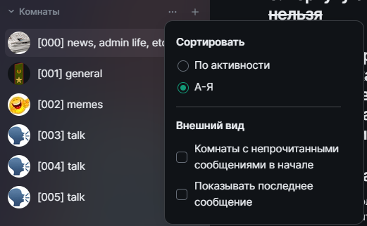
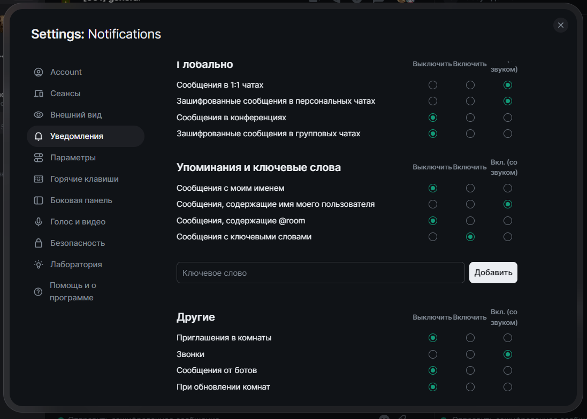

Добро пожаловать в таверну "The Drunken Dragon".
Самые главные правила на данный момент:
1. Никакого расизма
2. Минимизируйте обсуждение политики
3. чернуху без овнера травить нельзя
4. это пространство было собрано дендро-фекальным методом конструирования и ещё разрабатывается, просьба все жалобы админу (мне) в лс
5. жалобы на участников тудаже
Для удобства использования рекомендуем свернуть или скрыть раздел "Люди" и отсортировать комнаты по алфавиту


Рекомендую эти настройки уведомлений если вы недавно начали пользоваться мессенджером Element и сетью Matrix
Настроки ниже синхронизируются с другими устройствами
